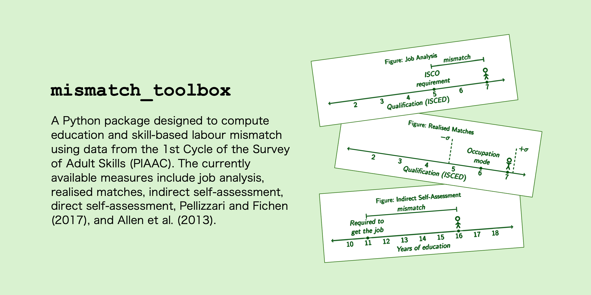
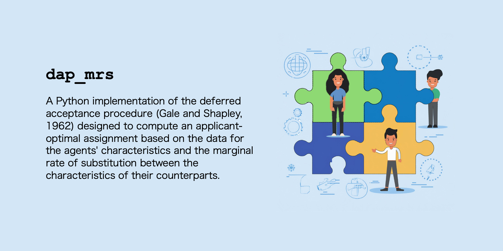
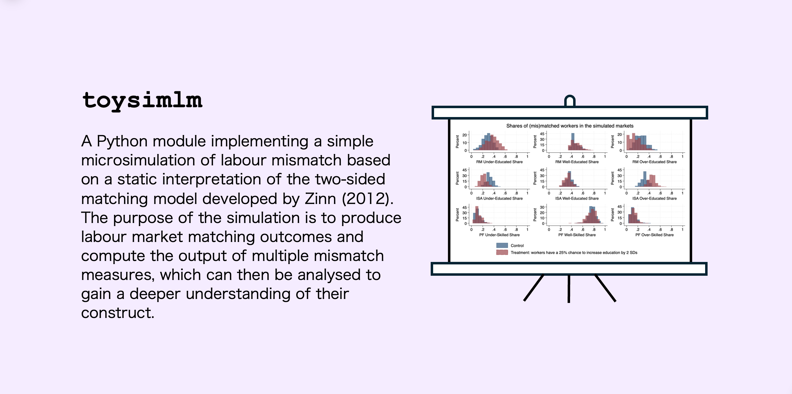

mismatch_toolbox
This package provides a set of functions designed to compute education and skill-based labour mismatch using data from…
2025-02-27
I’m a Research Associate in Economics at Heriot-Watt University, specializing in applied economics.
My current projects explore:


